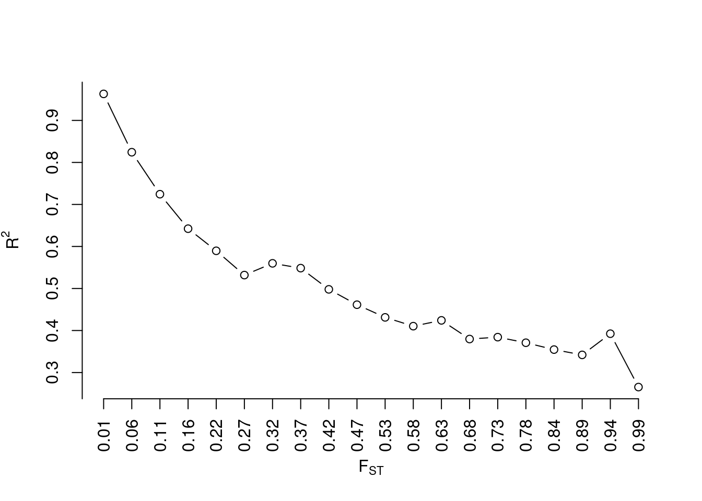
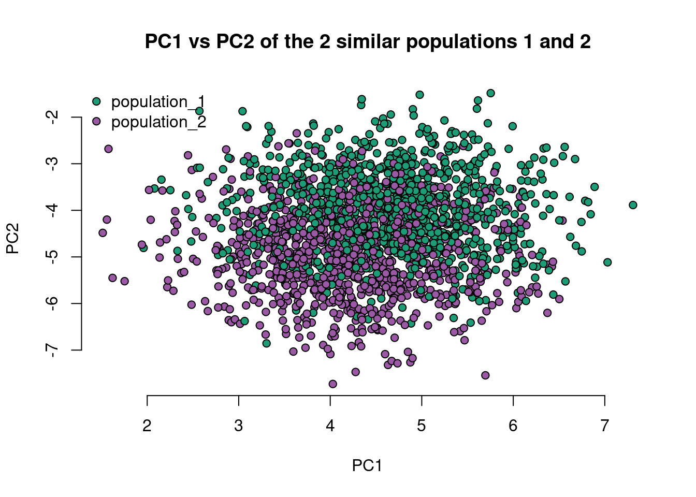

Code
library(gtools) # a librarylibrary(gtools) # a libraryOftentimes, we want to simulate populations in order to do some analysis. In this demo, I go over a, perhaps, crude way to mimic discrete and continuous populations. Before simulating, we need to know what a population is. In genetics, a population is a grouping of individuals based on some similarity in allele frequencies between them. Of course, there are many other definitions of what a population is. In this demo, I will use the definition based on allele frequencies.
One way to generate allele frequencies that mimic that seen in typical populations is to use the \(F_{ST}\), AKA the fixation index, AKA F-statistic. \(F_{ST}\) measures population differentiation as a result of genetic structure. Values range between 0 and 1, and higher values mean that two populations are highly similar. There are many definitions of \(F_{ST}\), depending on what you are discussing - and I am still learning about most of them. In this case, however, I am primarily concerned with allele frequency-related definitions.
To simulate populations based on the definition of \(F_{ST}\), one thing we can do is to simulate an ancestral population’s allele frequencies. This is similar to having a founder population from which every other population descends. Afterwards, we can simulate different populations from this ancestral population. This follows from the Balding-Nichols model.
\[\begin{align} Beta(\frac{1-F}{F}p, \frac{1-F}{F}(1-p)) \end{align}\]
Assume that we have 500 alleles/loci, and 4 populations, and we intend to simulate 1000 individuals from each of these populations. We can define our \(F_{ST}\) to be, say, 0.09 between populations 1 and 2, 0.19 between populations 1 and 2, and population 3, and 0.4 between all these populations, and population 4. Therefore, populations 1 and 2 will be closely related, and different from population 3, and all of them will be different from population 4.
M <- 500 # number of alleles or SNPs
n_pops <- 4 # number of populations
N <- 1000 # 20 individuals in each n_pops
f_pop12 <- 0.09
f_pop3 <- 0.19 # a third, distant, unrelated population
f_pop4 <- 0.4 # a fourth populationWhen we make plots of the allele frequencies of these populations, we expect high correlations between populations 1 and 2, and not-so-high correlations when we compare with the other populations 3 and 4.
We can generate some random minor allele frequencies (MAFs) to be the ancestral allele frequencies, and generate independent draws from the distribution of the ancestral allele frequencies, based on the equation above.
ancestral_allele_freqs <- runif(M, 0.01, 0.5)
sh1 <- ((1-f_pop12)/f_pop12)*ancestral_allele_freqs
sh2 <- ((1-f_pop12)/(f_pop12))*(1-ancestral_allele_freqs)
pop1_allele_freqs <- rbeta(M, shape1 = sh1, shape2 = sh2)
pop2_allele_freqs <- rbeta(M, shape1 = sh1, shape2 = sh2)
pop3_allele_freqs <- rbeta(M, shape1 = ((1-f_pop3)/f_pop3)*ancestral_allele_freqs, shape2=((1-f_pop3)/(f_pop3))*(1-ancestral_allele_freqs))
pop4_allele_freqs <- rbeta(M, shape1 = ((1-f_pop4)/f_pop4)*ancestral_allele_freqs, shape2=((1-f_pop4)/(f_pop4))*(1-ancestral_allele_freqs))
all_allele_freqs <- list(pop1_allele_freqs, pop2_allele_freqs, pop3_allele_freqs, pop4_allele_freqs)
names(all_allele_freqs) <- paste0('population_', 1:4)# generate many Fst values
fst_vector <- round(seq(0.01, 0.99, length.out=20), 2) # 20 fsts ranging from 0.01 to 0.99
per_fst <- lapply(fst_vector, function(each_fst){
sh1 <- ((1-each_fst)/each_fst)*ancestral_allele_freqs
sh2 <- ((1-each_fst)/(each_fst))*(1-ancestral_allele_freqs)
temp_allele_frq <- rbeta(M, shape1 = sh1, shape2 = sh2)
deviation <- cor(ancestral_allele_freqs, temp_allele_frq) #|> suppressWarnings()
return(deviation)
})cor_deviation <- per_fst |> unlist()
plot(cor_deviation, frame.plot=F, xaxt='n', yaxt='n', type='b', xlab = expression(F[ST]), ylab=expression(R^2))
axis(1, at=rep(1:length(cor_deviation), by=1), labels = fst_vector, las=2)
axis(2, at=seq(0, 1, 0.1))
We see that as the \(F_{ST}\) increases, the correlation between the ancestral allele frequency and the generated allele frequency reduces.
layout(matrix(c(1,2,3,4,5,6), nrow = 2, ncol = 3, byrow = T))
names_pop <- names(all_allele_freqs)
for(i in 1:4){
for(j in 1:4){
if(i == j){ # we don't want to plot pop1 vs pop1 e.t.c.
next
} else if (i < j) {
#cor_ <- round(cor(all_allele_freqs[[i]], all_allele_freqs[[j]]), 2)
plot(all_allele_freqs[[i]], all_allele_freqs[[j]], xlab = names_pop[i], ylab = names_pop[j], frame.plot = F)
#abline(a=0, b=cor_, col='red')
#mtext(cor_)
}
}
}
mtext('Scatterplot of allele frequencies for each population', outer = T)
The plot is approximately (roughly?) what we expect!
Given these allele frequencies, we can simulate genotypes from each of these populations by sampling from a binomial distribution.
\[\begin{align} G_{k_{n}} \sim Binom(n, p_{k}) \end{align}\]
where \(n\) is the number of success, and \(p\) is the probability of a success. Here, \(n = 2\) because we want 2 alleles per loci, and \(p\) is the allele frequency at that loci.
genotypes <- lapply(seq_along(all_allele_freqs), function(i){
matrix(data=rbinom(n=N*M, size=2, prob = all_allele_freqs[[i]]), nrow = N, ncol = M, byrow = T)
})
genotypes <- do.call(rbind, genotypes)
shuffle <- sample(1:nrow(genotypes)) # I will shuffle the data
genotypes <- genotypes[shuffle, ]
pops <- rep(names(all_allele_freqs), each=N)
pops <- pops[shuffle] # shuffle pops too, since it tells me what populations the genotypes come from
cat('Here is what the genotypes look like\n')Here is what the genotypes look likegenotypes[1:5, 1:5] [,1] [,2] [,3] [,4] [,5]
[1,] 1 0 0 1 0
[2,] 0 0 0 0 0
[3,] 1 1 1 0 0
[4,] 1 0 1 0 1
[5,] 1 1 2 0 0cat('And here is what the population designation looks like \n')And here is what the population designation looks like pops[1:5][1] "population_2" "population_2" "population_4" "population_1" "population_4"Next, we can calculate the principal components (PCs) of this data, and plot PC1 vs PC2, to see where the most variability lies in the data
# first change the row names of the genotype data to reflect the populations
#rownames(genotypes) <- pops
# I need to make sure that there are some variations in the SNPS - if there aren't any, I should remove them
pca_genotypes <- genotypes[ , which(apply(genotypes, 2, var) != 0)]
# PCA
pca_dt <- prcomp(pca_genotypes, scale.=T, center=T)
pca_dt$x[1:5, 1:5] PC1 PC2 PC3 PC4 PC5
[1,] 4.233058 -6.9117831 -6.31130594 1.3847396 0.99599087
[2,] 2.718064 -3.2834030 -5.56364918 0.3266232 -0.51678028
[3,] -13.023192 0.2291765 -0.02816269 0.2825154 1.67375827
[4,] 6.319232 -3.3384511 6.60342992 -0.3175040 0.05210246
[5,] -12.582127 0.6169435 -0.21811807 0.3415303 -0.04449736# colors
mycolors <- colorRampPalette(RColorBrewer::brewer.pal(8, "Dark2"))(n_pops)
#mycolors <- c('red', 'orange', 'green', 'blue')
color_coding <- factor(pops, labels = mycolors)
plot(pca_dt$x[, 'PC1'], pca_dt$x[, 'PC2'], bg=as.character(color_coding), xlab = 'PC1', ylab = 'PC2', frame.plot = F, pch=21, main='PC1 vs PC2 of 4 discrete populations')
legend('topleft', legend=names_pop, pch=c(21, 21, 21, 21), pt.bg=mycolors, bty = 'n', xpd=NA)
We can look at populations 1 and 2 only, and see if there is any difference between them.
pop_names <- c('population_1', 'population_2')
idx <- which(pops %in% pop_names)
pca_12 <- pca_dt$x[idx, ]
color_coding <- factor(pops[idx], labels = mycolors[1:2])
plot(pca_12[, 'PC1'], pca_12[, 'PC2'], bg=as.character(color_coding), xlab = 'PC1', ylab = 'PC2', frame.plot = F, pch=21, main='PC1 vs PC2 of the 2 similar populations 1 and 2')
legend('topleft', legend=pop_names, pch=c(21, 21), pt.bg=mycolors[1:2], bty = 'n', xpd=NA)
What I have done so far, is to simulate a discrete population of individuals. Think of it as people living in Mars, Earth, and Jupiter, and who have never intermingled since time immemorial. Population 3 is faraway from population 4. However, true human populations are not this way. How can we simulate a truly continuous population?
First, notice that I am only simulating allele frequencies. Therefore, I can put a prior on my earlier-defined beta distribution to model the probability that an individual is from population \(m\). In other words, I am trying to estimate what percentage of an individual’s alleles might have come from a certain population \(m\). I will call this random variable, \(Q\).
\[\begin{align} Q \sim Dirichlet(\alpha) \end{align}\]
A trick I can use is to take an individual, ask how much of their genome is shared among each population I have, select that proportion of allele frequencies, and simulate their genotypes based on the selection for each population. To do this, I need to know how to distribute the \(\alpha\) parameter used in the Dirichlet distribution. A trick I can use is to use the allele frequency distribution in the entire population. I will call this distribution the population grade distribution.
Earlier, I simulated some allele frequencies all_allele_freqs
ss <- sapply(all_allele_freqs, sum)
population_grade <- ss/sum(ss)
#population_grade <- rand_vect_cont(4, 1)
population_gradepopulation_1 population_2 population_3 population_4
0.2497513 0.2533554 0.2437039 0.2531894 Then I can use this as a parameter to the Dirichlet distribution to simulate the percentage of an individual’s genotypes that is shared across all 4 populations.
q_matrix <- gtools::rdirichlet(N * n_pops, alpha = population_grade) # I want to simulate, N individuals per populationHere is an illustration. Assuming that I am looking at the first individual
# assuming one individual
id1 <- q_matrix[1, ]
q_counts <- floor(id1 * M) # number of loci shared
q_counts[1] 36 3 249 210The assumption here is that this individual shares 36 loci with population 1, 3 with population 2, 249 with population 3, and 210 loci with population 4, and 3 independent loci not share with any population. The sum is 498 (because I rounded down), but I don’t want this to be this case. Therefore, I will share the remaining loci with the highest number already available, so that the sum is 500.
remainder_ <- M - sum(q_counts)
q_counts[which.max(q_counts)] <- q_counts[which.max(q_counts)] + remainder_
q_counts[1] 36 3 251 210Now, this sums to 500.
Putting this into a reusable function…
q_counts_fxn <- function(q_matrix, M){
apply(q_matrix, 1, function(each_row){
temp <- floor(each_row * M)
remainder_ <- M - sum(temp)
temp[which.max(temp)] <- temp[which.max(temp)] + remainder_
temp
}) |> t()
}
q_counts <- q_counts_fxn(q_matrix, M)
q_counts[1:5, ] # for the first 5 individuals [,1] [,2] [,3] [,4]
[1,] 36 3 251 210
[2,] 0 40 458 2
[3,] 199 124 30 147
[4,] 489 0 8 3
[5,] 298 6 196 0genotypes <- matrix(NA, nrow = N*n_pops, ncol = M) # remember, N individuals per population
for(q in 1:nrow(q_counts)){
pop_down <- 1
m_loci <- 1:M
i_loci <- list() # this list contains the actual loci an individual has shared among the other populations
while(pop_down <= ncol(q_counts)){
# sample pop 1 loci
pop_loci <- sample(m_loci, size=q_counts[q, pop_down], replace = F)
if(length(pop_loci) == 0){
m_loci <- m_loci[m_loci != 0]
i_loci[[pop_down]] <- 0
} else {
m_loci <- m_loci[!m_loci %in% pop_loci]
i_loci[[pop_down]] <- pop_loci
}
pop_down <- pop_down + 1
}
g_loci <- lapply(seq_along(i_loci), function(i){
temp <- all_allele_freqs[[i]][i_loci[[i]]]
rbinom(n = length(temp), size = 2, prob = temp)
})
gi <- vector(mode='numeric', length = M)
for(i in 1:n_pops){
gi[i_loci[[i]]] <- g_loci[[i]]
}
genotypes[q, ] <- gi
}pop <- paste0('population_', apply(q_counts, 1, which.max))
# first change the row names of the genotype data to reflect the populations
rownames(genotypes) <- pop
# I need to make sure that there are some variations in the SNPS - if there aren't any, I should remove them
pca_genotypes <- genotypes[ , which(apply(genotypes, 2, var) != 0)]
# PCA
pca_dt <- prcomp(pca_genotypes, scale.=T, center=T)
pca_dt$x[1:5, 1:5] PC1 PC2 PC3 PC4 PC5
population_3 2.6506291 2.858307 1.2969132 2.0232175 0.9366050
population_3 -4.0514135 6.378861 -0.8316378 -1.5719534 -0.5121965
population_1 -0.2221453 -2.244213 0.9201782 1.1765306 0.1031387
population_1 -4.1715368 -2.579360 6.2677277 1.1805959 0.3660538
population_1 -4.1004020 1.360524 3.7841542 -0.3067474 1.4318637mycolors <- colorRampPalette(RColorBrewer::brewer.pal(8, "Dark2"))(n_pops)
color_coding <- factor(rownames(pca_dt$x), labels = mycolors)
plot(pca_dt$x[, 'PC1'], pca_dt$x[, 'PC2'], bg=color_coding |> as.character(), xlab = 'PC1', ylab = 'PC2', frame.plot = F, pch=21, main='PC1 vs PC2 of 4 continuous populations')
legend('topleft', legend=names_pop, pch=c(21, 21, 21, 21), pt.bg=mycolors, bty = 'n', xpd = NA)